Индикаторы и бинарные опционы
Индекс массы
На финансовых рынках очень важно вовремя увидеть разворот трендового движения, чтобы успеть на нем заработать. Помочь трейдеру призваны разные инструменты графического и технического анализа. Одним из них является индикатор Index Mass или индекс массы. Он разработан показать трейдеру существующую волатильность. Когда показатель индикатора растет, это значит, что количество сделок на рынке также растет. Благодаря этому помощнику, инвестору предоставляется возможность вовремя увидеть смену направления тренда, чтобы этим воспользоваться.
Индекс массы – описание индикатора
Индикатор располагается в терминале в отдельном окне, где находится кривая инструмента. Она периодически растет и снижается. И хоть он визуально выглядит как множество других индикаторов, принцип работы у него совсем иной. Рост кривой индикатора происходит при росте диапазона цен, сигнализируя про рост волатильности. И наоборот, кривая снижается со снижением волатильности на рынке.
Основа работы индикатора – это такой универсальный инструмент, как скользящие средние. Их параметры задаются в настройках. При этом трейдер может воспользоваться стандартными настройками, а может настраивать экспоненциальную и обычную скользящую среднюю, а также количество крайних периодов для расчета.
Работа индикатора для торговых сигналов
В стандартных настройках индикатора индекс массы присутствуют два очень важных уровня – 26,5 и 27. Именно использование этих уровней инструмента дают возможность увидеть разворотный горб, который и будет нам сигналом для входа в рынок. Это происходит после периода высокой волатильности, когда индикатор растет выше уровня 27, а потом постепенно снижается, пробивая уровень 27, а затем и 26,5. Такое поведение индикатора сигнализирует инвестору о разворотной тенденции, к которой нужно подготовиться.
Для придания надежности работы по данному индикатору, необходимо использовать дополнительные инструменты, хотя бы те же самые скользящие средние. Если мы увидим разворотный горб на нисходящем движении, а скользящая средняя будет расти вверх – это время покупать опцион Call. Аналогично этому, время для покупки опциона Put нам подскажет сформировавшийся разворотный горб на восходящем движении и начало снижения скользящей средней.
Несмотря на то, что индикатор редко формирует торговые сигналы, они являются весьма надежными. Лучше всего использовать данный индикатор в качестве элемента своей торговой системы наряду с другими инструментами.
Индикатор линейной регрессии
Одной из наиболее распространенных методик работы трейдера на финансовых рынках является торговля в канале. Можно наносить границы каналов самостоятельно, а можно воспользоваться специально разработанным для этого инструментом – индикатором линейной регрессии. Он позволяет нанести канал на график цены и инвестору остается только правильно заключать сделки внутри него.
Описание индикатора каналы линейной регрессии
Используя индикатор каналов линейной регрессии для мт4 трейдеру не нужно самостоятельно искать локальные минимумы и максимумы для построения каналов. Все за него на любом тайм-фрейме сделает индикатор Linear Regression. Это особенно актуально для трейдера-новичка, который еще не обладает достаточным багажом знаний и опыта. На графике мы увидим канал с прочерченными линиями сопротивления и поддержки, а также центральную осевую линию.
На что стоит обратить внимание инвестору, так это на настройку времени, по которому будет строится канал. От него будет зависеть не только ширина данного канала цены, но и его длина. То есть, чем больше будет временной промежуток, тем длиннее будет канал. К примеру для торговли внутри дня опытные инвесторы предлагают устанавливать этот промежуток, равный 30-ти минутам.
Каналы линейной регрессии – как использовать индикатор
Чтобы использовать индикатор линейной регрессии, его необходимо первоначально скачать, после чего настроить в соответствии со своими потребностями. После того, как канал будет построен, мы будем следить за ним в поисках торговых сигналов. Для опциона Call мы будем использовать два вида сигналов. Первым будет отскок от нижней границы канала, при закрытии свечи выше этого уровня. Вторым сигналом для покупки опциона Call будет пробитие построенного канала вверх. Для этого необходимо дождаться закрытия первой свечи за его пределами. Точно так же по аналогии мы будем действовать и для опционов Put. Данный вид опционов мы будем покупать при пробое нижней границы канала и закрепления цены за ней, а также при отскоке цены от верхней границы.
Индикатор каналы линейной регрессии отлично подойдет для использования новичкам, поскольку прост в использовании. Главным элементом прибыльной работы с ним является правильная настройка инструмента для его корректной работы.
Индикатор Тренд цены и объема
Такой индикатор, как тренд цены и объема (PVT) дает возможность трейдеру следить за изменением цены актива и объема торгов в процентном отношении. При этом можно понимать какова сила текущего трендового движения. От большиства остальных индикаторов финансовых рынков этот инструмент отличается тем, что его показатели выражены в процентах, что делает их понимание проще.
Описание работы индикатора PVT
Если в условиях рынка растет объем торгуемого актива и активно изменяется цена на него, это может свидетельствовать о трендовом движении. При этом возможно движение как вверх, так и вниз. И наоборот, если эти два показателя снижаются, то это может свидетельствовать про снижение активности на рынке, то есть боковое движение без выраженной направленности, то есть флет. Как и у многих индикаторов-осцилляторов, данный технический помощник обладает собственными областями перекупленности и перепроданности. Появление PVT в такой зоне может сигнализировать о скорой смене текущего направления в движении. Так, выход вниз из зоны перекупленности говорит о начале нисходящей тенденции. Точно так же, выход вверх из зоны перепроданности свидетельствует о старте восходящего тренда.
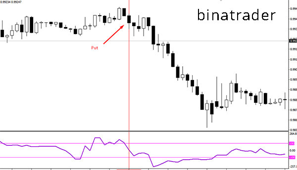Работа по индикатору тренд цены и объема
Исходя из функций этого инструмента, его можно использовать как подтверждение тренда: при росте показателей – восходящий тренд, при их снижении – нисходящий. То есть, подтвердив рыночное движение, можно входить в рынок, заключая сделки в его направлении – опцион Call на растущей цене и Put – на падающей. Так же нужно следить за рынком, когда PVT входит в свои зоны перекупленности и перепроданности. Когда рынок перепродан и начинается снижение цены финансового актива, можно смело покупать опцион Put, а также при нахождении технического инструмента в зоне перепроданности и развороте тренда вверх, покупки опциона Call.
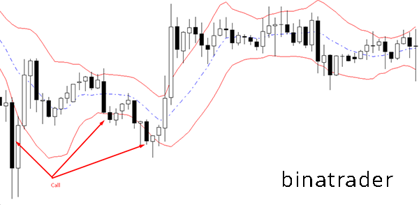Еще одним показателем, на который можно ориентироваться при работе на рынке бинарных опционов, это возникновение дивергенции, то есть достижение ценой новых экстремумов, чего не будет наблюдаться на индикаторе. В таком случае это будет говорить инвестору о том, что сила текущего тренд на исходе и нужно искать точки для входа в рынок при начале движения в противоположную сторону. К очевидным преимуществам индикатора PVT можно отнести легкость работы с ним, тогда как главным его недостатком является большое количество ложных сигналов, что делает невозможным использование в работе только этого инструмента, дополняя его другими индикаторами.
Индекс денежного потока
Одним из многочисленных осцилляторов, присутствующих на финансовых рынках и помогающих инвесторам зарабатывать, является индекс денежных потоков (IMF). Главной его особенностью является учет тиковых объемов и определение скорости ценового движения. Вообще по своей сути и методике расчета данный индикатор чем-то похож на индекс относительной силы.
Описание индикатора IMF
Говоря про данный технический инструмент нужно отметить, что показания его более устойчивы, чем в других осцилляторах из-за учета тиковых объемов торгов. Поэтому многие трейдеры выбирают именно его, оценивая изменение силы движения денег в том или ином финансовом активе. Результатом его работы является разница между положительным и отрицательным денежным движением в выбранном активе, что позволяет определить силу трендового движения. На вспомогательном графике инструмента, располагающегося под графиком цены, верхней и нижней его границей являются показатели в 0 и 100. Количество периодов, по которым производится расчет, равно 14, хотя этот параметр можно изменить самостоятельно в настройках индикатора. Таким образом, если за определенный период цена выше предыдущего значения поток считают положительным и наоборот, когда цена меньше – отрицательным.
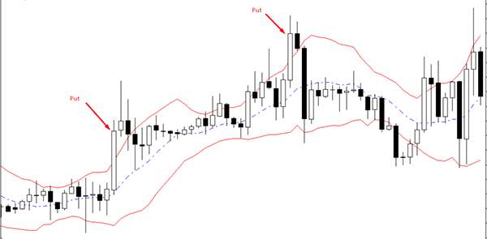Работа по индикатору индекс денежного потока
Работать с данным техническим помощником нужно по тем же правилам, что и с остальными осцилляторами. То есть готовиться ко входу на рынок нам будет необходимо, когда индикатор будет находиться в зонах перекупленности или перепроданности, а также при появлении дивергенции инструмента и графика цены. Начнем с дивергенций. Если на графике цены мы видим новые максимумы, а индикатор их не показывает, это свидетельствует о возможном развороте. Прежде, чем покупать опцион Put нам нужно дождаться разворота движения цены. Если противоположная картина наблюдается на нисходящем движении, можно готовиться к опциону Call, покупать который мы будем при развороте цены вверх.
Про зону перекупленности нам скажет подъем показаний индикатора выше уровня 80. Если наш осциллятор поднялся туда, возможно цена скоро не сможет расти и начнет снижаться. Сигналом к покупке опциона Put нам будет снижение кривой IMF ниже показателя 80. Также при недолгом посещении индикатором зоны перепроданности ниже уровня 20, нам надо готовиться к покупке опциона Call. Это необходимо будет делать при росте показателя IMF выше 20.
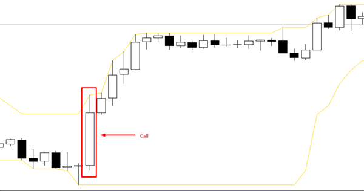Работать с этим индикатором необходимо в условиях флетового движения, поскольку при ярко выраженном тренде, мы можем наблюдать немало ложных сигналов данного инструмента.
Индикатор скорость изменения объемов
Создатели индикатора скорость изменения объемов (VROC) ставили перед ним весьма амбициозные цели. Они хотели, чтобы трейдеры с его помощью самостоятельно определяли текущий тренд на рынке по изменению объема ведущихся торгов. Во многом, им удалось осуществить задуманное и сегодня этот инструмент взяли на вооружение многие инвесторы по всему миру.
Особенности индикатора VROC
Любой торгующий на финансовых рынках знает, что сильное движение цены в любую из сторон сопровождается ростом объема. То есть достижение ценой нового максимума или минимума без увеличения количества заключаемых сделок невозможно. Именно поэтому данный инструмент показывает разницу в активности инвесторов в текущий момент с установленным в настройках другим периодом. То есть если в текущей свече объем сделок больше, чем в свече, сформировавшейся несколько периодов назад, то можно говорить о положительном изменении. Если ситуация прямо противоположная, то индикатор будет фиксировать отрицательную динамику изменения объемов сделок на финансовом рынке. Так что основную роль в индикаторе играет разрыв периодов. При настройках трейдера на 10-15 периодов, можно будет наблюдать за резкими всплесками активности инвесторов. Однако при этом разглядеть картину на рынке целиком крайне сложно, так что опытные игроки рынка бинарных опционов советуют использовать период не менее 30 свечей. В таком случае картина будет сглаженной, но и торговые сигналы могут немного запаздывать.
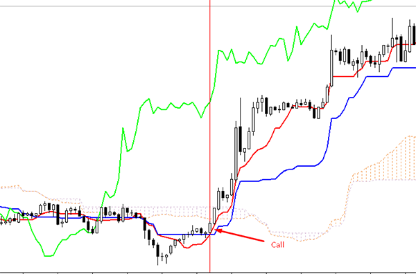Торговые сигналы индикатора скорость изменения объемов
Работа по индикатору проста и понятна даже новичкам рынка бинарных опционов. Наблюдая рост показателя инструмента, и поняв, в какую сторону на графике цены идет движение, можно покупать опционы в сторону тренда. То есть если тренд восходящий мы покупаем опцион Call и наоборот, если движение нисходящее – приобретаем опцион Put. Но тут следует напомнить, что торговля по объемам на фондовом рынке идет без особых трудностей, тогда как при работе с валютными парами, реальный объем скрыт и этот показатель рассчитывается просто по количеству совершенных сделок, что не одно и то же. Так что тут инвестор должен с опасением относиться к данному индикатору. Вообще, стоит сказать, что дополнение индикатора VROC другими техническими инструментами может создать интересную и прибыльную торговую стратегию.
Индикатор накопления и распределения Вильямса
Билл Вильямс широко известен не только на финансовых рынках. Этот инвестор не только заработал состояние на биржах, но и привнес много полезного для следующего поколения трейдеров. В частности им разработаны несколько индикаторов, которые уже несколько десятилетий используют инвесторы по всему миру. Один из таких инструментов – индикатор накопления и распределения Вильямса (WAD). Именно о нем и пойдет речь.
Описание индикатора WAD
Хотя Вильямсом индикатор разрабатывался для торговли на фондовых рынках, очень скоро он перекочевал наФорекс, а сегодня используется и торговцами бинарных опционов для определения изменений цен и объемов торгов. Когда показатель индикатора растет, предполагается, что цены достигают своих локальных максимумов. При этом растет и объем торгов, поскольку в тренд включаются все новые и новые участники рынка. Будет наблюдаться такая же ситуация при нисходящем движении, когда цена будет обновлять локальные минимумы, а сам индикатор будет показывать снижение количества совершенных сделок.
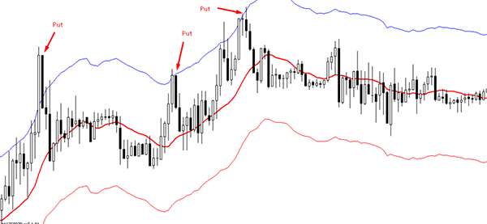Торговые сигналы индикатора WAD
В чем несомненное преимущество данного индикатора, так это в том, что он подает четкие сигналы, в которых под силу разобраться даже новичку. При работе с ним мы будем внимательно наблюдать за окном индикатора и графиком цены, и ждать появления дивергенции. Это такое состояние, когда два графика показывают разные показатели. Например, цена продолжает расти и обновлять максимумы, а график индикатора WAD не сможет достигать новых экстремумов. Это нам скажет о том, что рынок готов к развороту и стоит дождаться начала нисходящего движения, чтобы купить опцион Put. При появлении дивергенции графиков цены и индикатора WAD на нисходящем движении мы будем искать возможность покупки опциона Call торгуемого актива. Если же цена и индикатор обновляют свои экстремумы, это говорит, что сила тренда еще далеко не исчерпана и можно покупать опционы по тренду. Подводя итог, можно сказать, что индикатор накопления и распределения Вильямса очень удобен в работе, он прост, понятен, и не требует дополнительных настроек. Однако стоит помнить, что дивергенция на рынке – это не 100% гарантия разворота тренда и чтобы вступать в сделку необходимо подкрепление сигнала разворота другими инструментами.
Индикатор взвешенная средняя цена объема
Такой технический индикатор, как взвешенная средняя цена объема (VWAP - Volume Weighted Average Price), подскажет трейдеру, насколько велика активность рыночных игроков в данный момент времени. При этом самостоятельно этот инструмент трейдеры не используют, поскольку он не показывает направление тренда и не дает возможность прогнозировать цену на актив, однако он поможет трейдеру определить снижение объема торгов, а значит и возможный разворот цены.
Индикатор VWAP – описание работы
Взвешенная средняя цена дает возможность инвестору финансового рынка быстро определить объемы торгов в данный момент. При этом сразу же стоит отметить, что объективный результат этот индикатор покажет только на фондовом рынке, где известен объем продаваемых и покупаемых акций. На валютном рынке такая информация скрыта, поэтому приходится использовать синтетические инструменты дающие возможность правильно оперировать этим показателем. Такие инструменты, как индикатор VWAP, разрабатываются не для определения направления тренда, а для понимания степени активности участников рынка, что дает возможность понимания текущей ситуации.
Применение индикатора для торгов бинарными опционами
Снижение объемов торгов на рынке зачастую ведет к переходу рынка во флетовое движение. Когда много сделок не происходит, это может означать, что либо покупатели и продавцы удовлетворены текущей ценой, либо на рынке царит неопределенность. Рано или поздно показатели объемов растут, что свидетельствует об активизации продавцов или покупателей.
Основная задача индикатора VWAP – предупредить инвестора о том, что возможен разворот направления движения цены. Применительно к практике, это можно использовать, как подготовку к опциону Call, если цена на нисходящем тренде будет подходить к значительной поддержке и затормозит. Это может свидетельствовать о скором развороте и покупке опциона при таком развороте. Закономерно инвестор будет готов к покупке опциона Put в тот момент, когда на растущем движении цена подходит к значительному уровню сопротивления, готовясь к развороту. В этот момент стоит покупать опцион на понижение цены.
Индикатор Чайкина
Такой индикатор, как индекс Чайкина с успехом используется на многих финансовых рынках, в том числе, и торгующих бинарными опционами. И хоть данный инструмент применяют для расчета параметров объема торгов, он во многом похож на осцилляторы. Причем при соответствующей настройке его вполне можно использовать именно как осциллятор.
Описание индикатора осциллятора Чайкина (Chaikin Oscillator)
Суть такого технического инструмента состоит в том, чтобы трейдер мог определить силу движения на рынке. Если в данный момент на рынке происходит восходящее движение, то и цены закрытия, и показания индекса будут стремиться к максимумам. При этом объем должен быть выше средних значений. При нисходящем тренде будет наблюдаться картина противоположная – к минимумам будут стремиться и цены закрытия, и показания осциллятора Чайкина. Однако при этом показатели объемов также будут выше среднего.
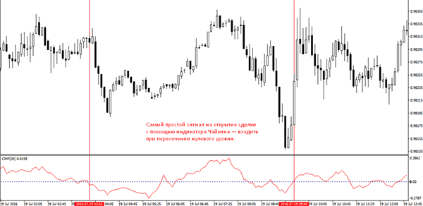Сигналы для работы с бинарными опционами по индикатору
Основным сигналом индикатора Чайкина для трейдера является рост объемов торгов при восходящем и нисходящем движении. То есть когда растет показатель объема, на рынке складываются хорошие условия для сильного движения. Значит, для покупки опциона Call нам нужно не только увидеть растущий тренд, но и зафиксировать рост объемов, о чем нам подскажет данный индикатор. И наоборот, опцион Put мы будем покупать при нисходящем движении, подтвержденным ростом объема по индексу Чайкина.
Для того чтобы точнее определить начало трендового движения нам желательно использовать трендовые индикаторы или осцилляторы, которые выступят в качестве дополнительных инструментов.
Второй способ использовать индикатор Чайкина на рынке бинарных опционов для получения прибыли – это использовать дивергенцию между ценой и его показаниями. При появлении на графике цены и в окне инструмента бычьей дивергенции можно будет покупать опцион Call при начале разворотного движения вверх. Если же инвестор видит медвежью дивергенцию, это сигнализирует ему о том, что можно будет купить опцион Put при развороте движения вниз.
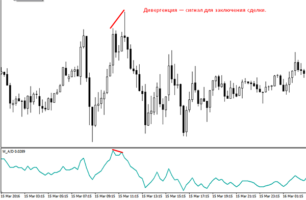Основным недостатком этого индикатора является то, что его нельзя использовать самостоятельно, поскольку процент ложных сигналов очень велик. Поэтому для успешной торговли трейдеру приходится дополнять индекс Чайкина другими техническими помощниками.
Индикатор Aroon
Еще одним трендовым индикатором, помогающим трейдеру определять направление и силу движения цены на рынке – это Aroon (Арун). Помимо этого инструмент помогает определять, когда на рынке начинается состояние флэта.
В своей работе индикатор Арун использует определенный в настройках временный интервал, по которому происходит расчет. Поэтому кривые этого инструмента строятся после появления экстремумов на этом интервале. При этом кривая Aroon Up, чаще всего синего цвета, демонстрирует трейдеру то, сколько прошло периодов с момента возникновения максимума. Также и линия Aroon Down, зачастую красного или оранжевого цвета, показывает нам, сколько прошло времени после возникновения на графике локального минимума.
О царящем на рынке медвежьем тренде будет свидетельствовать нахождение линии Aroon Down выше уровня 70, а кривой Aroon Up ниже 30. Если же, ситуация по линиям индикатора противоположна, то это говорит о восходящем - бычьем тренде.
Вместе кривые инструмента образовывают осциллятор, который рассчитывается, как разница между показателями Up и Down. Этот показатель постоянно располагается между значениями от -100 до +100. При этом центральной будет линия 0. Исходя из этого, о сильном восходящем тренде нам скажет показатель выше уровня +50, и наоборот, уровень осциллятора ниже -50 подскажет нам о силе царящего медвежьего тренда. При этом если показатель располагается возле уровня 0, это значит, что на рынке в данный момент флет (затишье).
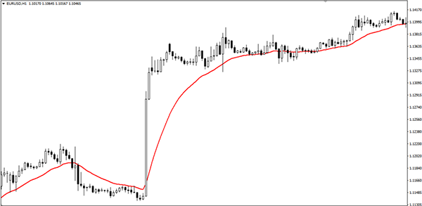Торговые сигналы индикатора
Индикатор и осциллятор Арун должны совпадать, чтобы инвестору принимать решение о входе на рынок по тем сигналам, которые дает данный инструмент. Если мы наблюдаем, что индикатор демонстрирует нам рост и вхождение в зону выше +50 – самое время покупать опцион Call. Аналогичная ситуация будет, когда индикатор Aroon стремительно будет направляться в зону ниже -50. Это значит, трейдеру пора покупать опцион Put по торгуемому активу.
При этом важность индикатора для инвестора двойная. Как индикатор он демонстрирует трейдеру наличие в данный момент трендового движения и его силы. Как осциллятор, он помогает определить точки разворота, показывая инвестору зоны перепроданности и перекупленности.
И хоть индикатор Aroon (Арун) относится к достаточно точным инструментом на рынке бинарных опционов, очень желательно комбинировать его с другими сигналами для большей достоверности сигналов для заключения сделки.
Канал Кельтнера
Канал Кельтнера (Keltner channel) по внешнему виду инструмента очень сильно напоминает отлично знакомый большинству трейдеров индикатор Полосы Боллинджера. Это неспроста, поскольку Боллинджер использовал индикатор канал Кельтнера для модификации собственного инструмента. И хотя идея у них одинаковая, но функции отличаются, поэтому этот индикатор стоит рассматривать отдельно.
Каналы Кельтнера – описание индикатора
Индикатор канал Кельтнера, который можно скачать и установить в торговый терминал, будет находиться в главном окне графика цены. Он выглядит, как три кривых, которые представляют собой канал, нахождение цены в котором считается «нормальной». Средняя линия канала – это простая скользящая средняя, хотя некоторые аналитики предлагают для этой цели использовать экспоненциальную среднюю (EMA).
Верхняя и нижняя линии, являющиеся границами канала, представляют собой разность и сумму, рассчитывающуюся от срединной линии. Идея индикатора в том, что когда график цены расположен внутри канала, то трендового движения наблюдаться не будет. Тогда как, выход цены за пределы канала, означает начало тренда.
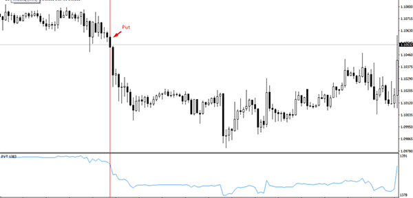Канал Кельтнера: стратегия работы
Сигналы, которые данный индикатор подает трейдеру, очень просты для понимания, так что с ними сможет разобраться даже новичок трейдинга. Сигналом на покупку опциона Call является выход графика цены за пределы канала и закрепление за ним. После закрытия свечи за пределами канала, есть смысл входить в рынок. Абсолютно также мы будем поступать, когда график цены выйдет за пределы канала и закрепится там. Тогда нам стоит подумать о покупке опциона Put.
И хоть теоретически стратегия выглядит весьма легко, стоит учесть, что индикатор подает большое количество ложных сигналов, которые легко приведут к финансовым потерям инвестора, а потому стоит серьезно отнестись к его настройке.
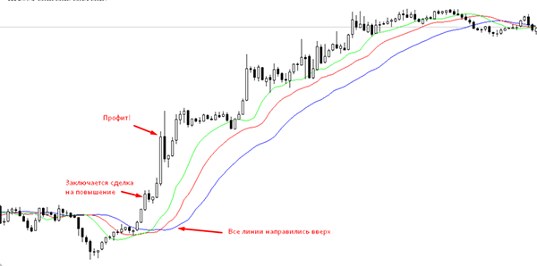В зависимости от финансового актива, мы настраиваем экспоненциальную среднюю, которая по умолчанию настроена на 20-ти периодный уровень. Ширину выбранного нами канала определяет число отклонений. Чем оно больше, тем шире будет наш канал. Широкий канал стоит делать при работе с высоковолатильными активами. Если же мы имеем дело с активами с низкой волатильностью, его не стоит делать слишком широким. Также не стоит забывать о большом количестве ложных сигналов индикатора, поэтому его стоит использовать только в сочетании с другими инструментами, которые помогут отфильтровать ложные сигналы.
Индикатор свободы движения
Такой индикатор, как свобода движения (Ease of Movement или EOM) является важным техническим инструментом, показывающим инвестору отношение между объемами и скоростью изменения стоимости актива. Другими словами, этот индикатор показывает трейдеру объем торгов, необходимый для изменения цены.
Индикатор EOM – описание:
Технический инструмент свобода движений рассматривает отношение такого показателя как средняя точка к объемам торгов. Средней точкой создатель индикатора назвал среднюю стоимость актива за выбранный период (минута, час, день и т.д.) Ее можно рассчитать не только для текущего, но и для любого прошедшего периода. Чтобы с индикатором визуально было легче работать, он представлен в виде скользящей средней, которая перемещается возле нулевого уровня на графике.
Именно эта средняя будет играть роль сигнальной линии, которая будет сглаживать резкие скачки показаний индикатора. Инвесторы вступают в сделку, покупая опционы, когда эта сигнальная линия будет пресекать нулевой уровень.
В то время, когда индикатор показывает рост – это будет свидетельствовать о том, что повышение цены сопровождается небольшими объемами контрактов по активу. То есть в ближайшее время возможен разворот тренда. Значит в ближайшей перспективе можно готовиться к покупке опциона Put. Снижение показателя индикатора EOM показывает трейдеру, что падение цены не сопровождается большими объемами. В таком случае, в скором времени возможно начало восходящего движения и, соответственно, покупка опциона Call. Нахождение индикатора около нулевой отметки говорит о том, что объемы торгов в данный момент слишком низкие для нормального движения. В этот момент лучше воздержаться от сделок.
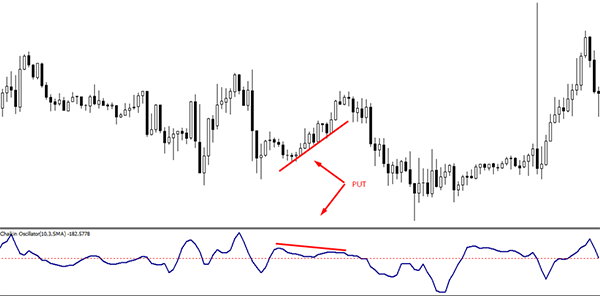Торговые сигналы индикатора свободы движений
Разбирая торговые сигналы индикатора стоит отметить, что инвестор должен покупать опцион Call при пересечении нулевой отметки снизу вверх и подъему ее к максимальным значениям. Возможность покупки опциона Put трейдер будет рассматривать при пересечении кривой инструмента нулевой отметки сверху вниз и приближении ее к минимальным значениям.
Особенностью данного индикатора является то, что свобода движения цены на графике будет определяться объемом и ценовым диапазоном – чем он уже и объем больше, тем меньших скачков цены можно ждать. Использовать инструмент EOM необходимо в совокупности с другими индикаторами для фильтрации торговых сигналов и более надежных сделок.
Индекс Армса
Среди всех технических индикаторов, используемых инвесторами финансовых рынков, необычностью выделяется индекс Армса, имеющим также название индикатор трин (TRIN). Необычность его состоит в том, что он показывает не направление тренда, его смену или объемы торгов, а то, в какой актив – падающий или растущий вкладывают деньги в данный момент участники рынка.
Описание индикатора Армса
Как и все торговые индексы, индикатор Армса рассчитывается по специальной формуле, которая выводит коэффициент падения или роста цены, а также коэффициент падающего или растущего объема. Он вычисляется путем деления количества подорожавших акций на количество подешевевших. Точно также выводят коэффициент изменения объема, после чего первое число делят на второе. При этом инвесторы считают, что если значение данного индикатора находится ниже 1, то больше торгуют растущими в цене акциями, то есть рынок перекуплен. Если же показатель выше 1 значит, что инвесторы больше торгуют подешевевшие акции и рынок в данный момент находится в состоянии перепроданности. Уникальность индикатора TRIN состоит в том, что его можно воспринимать как осциллятор, трендовый индикатор, а также инструмент, показывающий долгосрочные тенденции, одновременно.
Работа с индикатором TRIN
Поскольку данный инструмент анализирует индексы торговых площадок, то чаще всего он применяется при торговле бинарными опционами биржевых индексов. При этом если мы используем данный торговый инструмент, как трендовый индикатор, то будем покупать опцион Call после подъема выше уровня 0,8. И наоборот, покупка опциона Put при снижении индикатора ниже 0,8 – будет правильным решением для инвестора. Используя индикатор Армса как осциллятор, наши действия на рынке будут отличаться. Покупать опцион Call мы будем при снижении показателя ниже уровня 1 и наоборот, покупать опцион Put будем при росте индекса выше 1. Преимуществом индикатора Армса является его высокая функциональность, как технического инструмента. При этом, как и большинство индикаторов использовать его в одиночестве для построения самостоятельной и прибыльной торговой системы не получится, поскольку он также дает много ложных сигналов. Именно поэтому его нужно дополнять другими инструментами, которые позволят видеть картину более полно и, соответственно, адекватно реагировать на поведение рынка.
Индекс силы Элдера
Относительно молодым индикатором является индикатор, который разработал Александр Элдер – индекс силы. Он появился чуть более двадцати лет назад, но уже сейчас активно используется трейдерами всех валютных рынков. Этот индикатор следит за объемами торгов на рынке, поскольку именно возрастание объемов свидетельствует о силе трендового движения. Поскольку наиболее точные данные про объемы торгов присутствуют на рынке акций, большая точность сигналов индикатором демонстрируется именно тут.
Описание индикатора индекс силы Элдера
Этот инструмент входит в список стандартных, то есть встроенных, индикаторов в большинство торговых терминалов. Это значит, что если у инвестора есть установленный терминал, дополнительно индекс силы Элдера скачивать с посторонних ресурсов не придется. При активации его, он откроется в отдельном окне, в виде растущей и падающей кривой.
Индикатор учитывает множество факторов, без использования которых получить объективные данные о состоянии рынка очень сложно. Он рассчитывается перемножением текущего объема торгов на разницу между ценой открытия и закрытия актива. При этом сама кривая индикатора отображается в виде экспоненциальной скользящей средней.
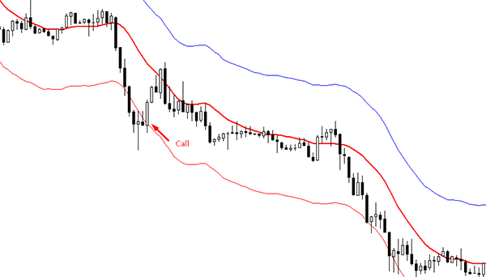Как читать индекс силы Элдера?
Настройка индекса силы Элдера очень проста, поскольку тут настраивается лишь один параметр – период, по которому строится EMA. Сам автор рекомендует для этого использовать показатель, равный 13.
Однако для практической торговли часто применяют сразу два индикатора, один «медленный» с параметром 13, и второй «быстрый» с параметром 2. Быстрый индикатор используют для заключения сделок, а медленный для наблюдения за силой тренда. Если оба индикатора находятся около значения «0», это может означать, что тренд свою силу утратил или же рынок находится в боковом движении.
Таким образом, опцион Call мы будем приобретать на нисходящем тренде, когда индикаторы переходят из отрицательного в положительное значение. Соответственно, опцион Put мы покупаем на восходящем движении, при переходе индикаторов из положительной в отрицательную область. Появление дивергенции на графике цены и индикатора также свидетельствует про скорое окончание текущего тренда, так что можно готовиться к покупке опциона в противоположном направлении. Данный торговый инструмент хорошо демонстрирует силу тренда и лучше всего его использовать не как отдельный инструмент, а как фильтрующий показатель в составе других торговых стратегий.
Индикатор стандартное отклонение
Standart Deviation, с английского переводится, как «стандартное отклонение». Именно так зовется индикатор, называемый также StdDev, который демонстрирует трейдеру не направления тренда, как индикатор TRIX, а волатильность на рынке. То есть его показания говорят трейдеру о том, насколько быстро совершаются сделки в данный период времени. Математически он рассчитывается делением колебания цены на показатель средней скользящей. Поэтому если кривая индикатора растет, значит, растет и волатильность, и наоборот.
Описание индикатора StdDev
Инвестору, который собирается активно использовать этот индикатор в своей работе, то есть торговать стандартное отклонение, необходимо знать, что собой представляет этот инструмент. Он работает в отдельном окне и входит в стандартный набор вспомогательных элементов торгового терминала MetaTrader 4. При этом, особенно новичкам трейдинга, нужно запомнить, что рост или снижение показателя – это не показатель направления тренда и не стоит торопиться с покупкой опциона, это всего лишь расширение или снижение торгового диапазона и показывает нам на востребованность того или иного финансового актива.Для тренда и флета, или бокового движения, существуют свои торговые стратегии, которые не будут работать и приносить прибыль, если мы неправильно определим состояние рынка. Именно поэтому нам важно знать, когда на рынке будет тренд, чтобы начать на нем зарабатывать. Вот об этом нам и поведает индикатор стандартное отклонение.
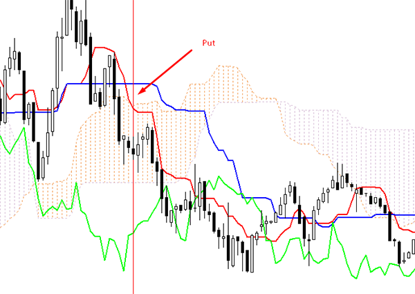Торговля по сигналам индикатора стандартное отклонение
Большинство торговых систем для бинарных опционов отлично работают во время ярко выраженных трендов, когда достаточно легко предсказать направление изменения цены. Потому во время «затишья» на рынке, о котором будут свидетельствовать низкие показания индикатора, лучше воздержаться от совершения сделок.
Однако только лишь повышение волатильности, про которое нам сообщит StdDev, не даст нам возможности самостоятельно входить на рынок. Для этого необходимо, как минимум знать, куда этот самый тренд двигается. Поэтому его рекомендуют использовать в связке с другим трендовым индикатором, или индикаторами. Часто для этих целей используют Полосы Боллинджера. Индикатор хорошо показывает нам настроения, царящие на рынке, и достаточно прост для понимания, однако самостоятельно его использования для торгов и генерации торговых сигналов практически невозможно.
Индекс товарного канала
Изначально такой индикатор, как индекс товарного канала – Commody Channel Index (CCI) разрабатывался его автором как вспомогательный инструмент для поиска разворотных точек на товарных рынках. Однако со временем он прочно вошел в число наиболее «любимых» индикаторов инвесторов, в том числе работающих на рынке бинарных опционов. Сегодня он входит во многие стратегии и используется как рабочий инструмент для самостоятельного совершения сделок.
Описание индикатора CCI
Как и многие другие осцилляторы, Commody Channel Index – это инструмент в отдельном окне внутри торгового терминала. Для его расчета используется цикличность изменения цены определенного периода. Он имеет свои зоны перепроданности и перекупленности, отмеченные на графике отметками +100 и -100, а также срединную линию с отметкой 0.То есть с его помощью трейдер может получить информацию о текущем тренде, увидеть готовящийся разворот и волатильность на рынке в текущий момент времени. Исходя из той большой информативности, которую дает данный инструмент, возникает немало способов для его использования во время торгов на рынке бинарных опционов.
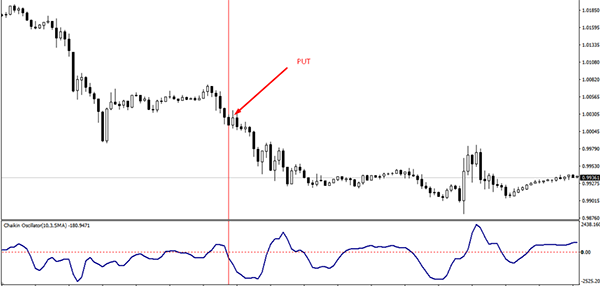Торговля по индексу товарного канала
Сам автор индикатора рекомендовал покупать актив при подъеме индикатора выше уровня +100, и продавать при падении его ниже отметки -100. Применительно для рынка бинарных опционов, это значит, что в первом случае мы покупаем опцион Call, а во втором, опцион Put. В последствие многие трейдеры заметили, что выход кривой индикатора из зон перекупленности и перепроданности ведет такому же движению и стоимости актива, так что теперь это также используют для поиска точек входа на рынок. Другим сильным сигналом является появившаяся дивергенция индикатора и графика цены. Если цена базового актива обновляет локальные максимумы или минимумы, а на графике CCI этого не происходит, это может свидетельствовать о скорой смене направления тренда. Для поиска оптимального времени входа, трейдеру следует воспользоваться другими инструментами технического или графического анализа. Подводя итог, следует отметить высокую функциональность индикатора «индекс товарного канала», что помогает трейдеру ориентироваться в текущей ситуации на рынке. В качестве подтверждения сигналов, он отлично вписывается во многие стратегии торговли. А вот использовать его единолично для генерации торговых сигналов не рекомендуется, поскольку большое их количество оказывается ложными.
Индикатор Трикс
Один из трендовых индикаторов, который с успехом пользуется трейдерами бинарных опционов, это осциллятор TRIX. Его основное предназначение – определять направление тренда и силу движения цены. И хотя этот инструмент вполне может использоваться и как самостоятельный способ генерировать сигналы, для улучшения результатов лучше включить этот индикатор в другую стратегию, как дополнительный способ фильтрации входа в рынок.
Индикатор трикс: основные характеристики
Данный индикатор разрабатывался, как способ не замечать мелкие ценовые категории и генерировать сигналы при разворотах трендового движения. Он работает на основе пересчета цен используя экспоненциальную среднюю (EMA). При этом трейдер может самостоятельно установить индивидуальные настройки для удобства работы с ним. В окне графика он выглядит как кривая, а само окно разделено нулевой срединной линией. Следовательно, пока кривая находится выше ее, на рынке царит восходящий тренд, пока ниже – среди инвесторов преобладают продавцы. Значит, покупать опционы мы будем при пересечении этой линии. При пересечении вниз – опцион Put и при пересечении вверх – опцион Call.
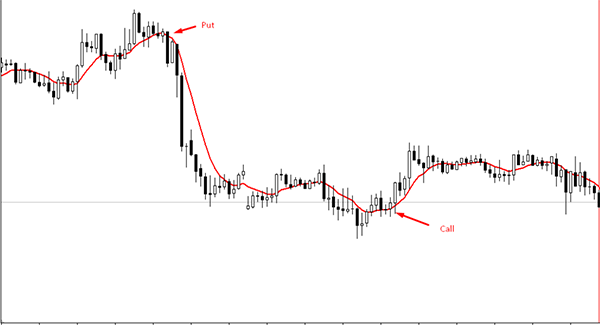Плюсы и минусы индикатора TRIX
Как и любой индикатор, используемый на финансовых рынках, трикс имеет свои положительные и отрицательные стороны. К сильным его сторонам можно отнести простоту использования и возможность пользования им на всех без исключения тайм-фреймах. То есть данный инструмент может легко использоваться новичками рынка и также служить показателем существующего направления цены торгуемого актива. К недостаткам индикатора трикс профессионалы трейдинга относят сложность построения полновесной торговой системы только на нем одном. Часто TRIX генерирует ложные сигналы для покупки опционов, поскольку не учитывает текущие условия на рынке, а также присутствующие в любом тренде уровни поддержки и сопротивления. Так что торговля, основанная только на данном индикаторе не способна принести стабильную прибыль. Гораздо разумнее его использовать в сочетании с другими инструментами анализа.
Подводя итог, нужно сказать, что такой индикатор отлично подходит тем, кто делает первые шаги в инвестировании в финансовые рынки. Он дает возможность отслеживать движение и силу тренда для совершения будущих сделок. Опытные трейдеры легко могут включить TRIX в свои торговые системы для совершения большего количества успешных сделок.
Индикатор PCU
Одним из самых простых и при этом высокоэффективных трендовых индикаторов является канал изменения цен, или же по-английски Price Channel Upper (PCU). В основе его работы лежит стремление рынка, при всем своем динамичном движении, прийти к средней цене, которая одинаково устраивала бы и продавцов, и покупателей. Таким показателем в данном индикаторе является скользящая средняя. Именно вокруг нее и строится гибкий канал изменения цен, ширина которого изменяется в зависимости от волатильности. Правильно настроенный канал содержит внутри себя 95% всех цен рынка, тогда как только 5% из них выходят за его границы.
Описание индикатора PCU
Опытный трейдер, наверняка, заметит схожесть данного индикатора с другим популярным инструментом – Полосами Боллинджера. Индикатор при нанесении на график появляется сразу в окне торгуемого актива, что чрезвычайно удобно. При этом крайние границы ценового канала динамичны – они то сужаются в состоянии покоя рынка, то расширяются при динамичном ценовом движении.
Выход цены за пределы канала сигнализирует инвестору про то, что вскоре она должна вернуться в него, то есть можно готовиться к покупке опциона Call или Put. Главным в работе с таким индикатором является его правильная настройка. Именно она позволяет безошибочно торговать по нему. В первую очередь это касается выбранного периода и типа скользящей средней. Эти параметры будут устанавливаться исходя из:
Выбранного финансового инструмента и его особенностей;
Степени долгосрочности торговли;
Традиционной волатильности базового актива.
Торговля по каналам изменения цен
Основная задача индикатора показать трейдеру отличные уровни сопротивления и поддержки. Крайние уровни достаточно сильны – так что велика вероятность, что именно от них цена может оттолкнуться.
Когда цена приближается к нижней границе, это говорит трейдеру о том, что пора готовиться к опциону Call. Его стоит покупать, когда график оттолкнется от нижней границы канала или выйдет за его пределы, а затем вернется в канал.
Инструмент PCU демонстрирует весьма хорошие результаты, кроме того он очень прост и понятен для использования. То есть его легко использовать новичкам, а опытные трейдеры могут включать его в свои торговые системы, оптимизируя их.
Сглаженная скользящая средняя
Скользящие средние можно по праву назвать одним из самых популярных индикаторов. Их достаточно часто и с высокой эффективностью применяют новички и достаточно опытные трейдеры. Одной из разновидностей этого вспомогательного инструмента является сглаженная скользящая средняя. Впрочем, именно этот тип индикатора используется сравнительно редко. Большинство трейдеров предпочитают пользоваться другими вариантами скользящих средних. Это обусловлено спецификой построения рассматриваемого индикатора. В чем же заключаются его особенности и для какой сферы данный инструмент подходит лучше всего? Эти вопросы подробно рассмотрены ниже.
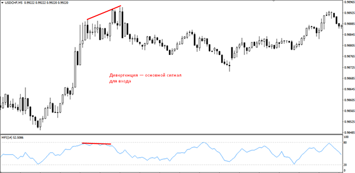О специфике сглаженной скользящей средней
Рассматриваемый вид индикатора ориентирован на длительные отрезки. Следовательно, происходящие колебания незначительны. Снижение чувствительности к колебаниям на рынке обеспечивает и предельно низкое число возможных ложных сигналов. Такая особенность обусловлена тем, что на рынке должны произойти действительно существенные изменения, чтобы индикатор на них среагировал. Многим кажется, что низкая чувствительность к рыночному шуму должна обеспечить этому инструменту высокую популярность среди трейдеров, но это ошибочное мнение. Перечертить такой график непросто, что затрудняет проведение с его помощью анализа рынка. Это сильно уменьшает уровень качества получаемых торговых сигналов. Профессионалы применяют рассматриваемый индикатор исключительно для долгосрочной торговли. Соответственно, он подойдет тем, кто хочет купить опционы с длительным временем экспирации. Использование такого вспомогательного инструмента в других целях может вызвать серьезные затруднения.
Взвешенная скользящая средняя
Применяемый для бинарных опционов индикатор взвешенная скользящая средняя ориентирован на цены, расположенные ближе всего к текущему значению. Это значит, что время от времени будут возникать ложные сигналы, но внимательному трейдеру будет довольно легко применить этот инструмент.
Метод взвешенной скользящей средней
Линейно взвешенная скользящая средняя во многом похожа на простую скользящую среднюю. Однако этот индикатор уделяет большее внимание ценам, находящимся поблизости от текущей стоимости. Его применение аналогично принципам использования простой скользящей средней. Кривая графика направлена вверх? Можете с уверенностью покупать опционы Call. Если кривая пошла вниз, то покупайте опционы Put, так как происходит отработка нисходящего тренда. За конкретный промежуток времени формула взвешенной скользящей средней позволяет оценить колебания. Впрочем, есть у этого индикатора и некоторые недостатки, которые будут рассмотрены далее. Обратите внимание, что сейчас существует немало усредненных графиков, позволяющих применять самые разные настройки, чтобы правильно рассчитать вес цен.
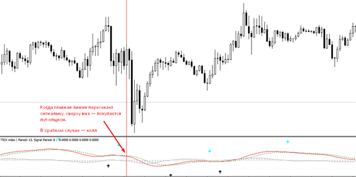Главным минусом данного индикатора является большое количество ложных сигналов, которые он будет посылать трейдеру. Кроме того, точки входа в тренд могут показываться с некоторым запаздыванием. Преимуществом этого инструмента можно считать повышенную чувствительность к изменению цены. Для большей точности прогнозов рекомендуется использовать приведенный индикатор в комбинации с другими. Простота взвешенной скользящей средней позволяет с одинаковой легкостью использовать этот индикатор новичкам и профессиональным трейдерам.
Экспоненциальная скользящая средняя
Экспоненциальная скользящая средняя относится к разновидностям индикатора скользящая средняя. Она больше всего подходит для работы с краткосрочными опционами. Данный вид индикатора отличается чувствительностью и при работе с долгосрочными опционами может выдать массу ложных сигналов.
Расчет экспоненциальной скользящей средней
Как известно, экспоненциальные кривые помогают сглаживать колебания цен, что позволяет с точностью определять текущий денежный тренд. Это особенно полезно, если трейдер работает с рынками, где колебания цен достаточно велики. Индикатор экспоненциальная скользящая средняя является ориентирован прежде всего на крайние цены. Что касается придаваемого значения, то оно напрямую зависит от периода, установленного для кривых. Чем он меньше, тем больше внимания следует обратить на крайние цены. Помните, что формула экспоненциальной скользящей средней требует учитывать каждый ценовой уровень за все время построения. Для краткосрочных периодов старые цены быстро становятся менее значимыми. С графической точки зрения экспоненциальная скользящая средняя (ema) во многом похожа на простую скользящую среднюю. Разница в том, что экспоненциальный индикатор более чувствителен к изменениям цен. Значения старых цен снижаются по экспоненте, когда появляются новые. Если индикатор повернут вверх, то приобретайте бинарные опционы Call. Направление вниз означает, что в текущий момент выгоднее приобретать опционы Put.
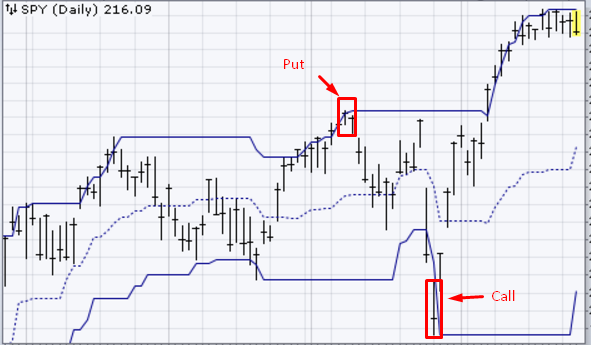Разумеется, выбор индикатора зависит от особенностей активов, с которыми трейдер обычно работает. Приходится находить компромисс между чувствительностью вспомогательного инструмента и количеством ложных сигналов, которые можно от него получить. Каким из индикаторов пользоваться? Решайте сами.
Простая скользящая средняя
Простая скользящая средняя – это индикатор, относящийся к простейшим вспомогательным инструментам. Его применение помогает трейдерам получать прибыль, работая на финансовых рынках. Если данный индикатор смотрит вверх, то в настоящее время побеждают покупатели и рекомендуется покупать опционы Call. Если же он направлен вниз, то в выигрыше продавцы, а покупать лучше опционы Put. Простая скользящая средняя (sma) считается одним из самых популярных вспомогательных инструментов современных трейдеров. Секрет успеха заключается в универсальности этого индикатора и простоте управления. Его могут с успехом применять новички. Даже если пользоваться только им, то можно рассчитывать на существенную прибыль.
Метод простого скользящего среднего
Данный индикатор представляет собой кривую, наносящуюся на график. Движение кривой происходит в том же направлении, что и движение трендовой линии, которая изображается трейдером с учетом текущих минимумов и максимумов. С помощью данного индикатора легко определяются направления движения рынка в настоящий момент. Следовательно, простой 4 звенной скользящей средней можно пользоваться для того, чтобы выстраивать будущие стратегии. Внешний вид индикатора напрямую зависит от используемого масштаба. Одновременное использование нескольких кривых с разными периодами поможет трейдеру создать собственную эффективную стратегию. Например, нужно отследить краткосрочные тренды. Для этого подойдет кривая с кодом 10. Для среднесрочных трендов понадобится 50 дней, а для долгосрочных – 200.
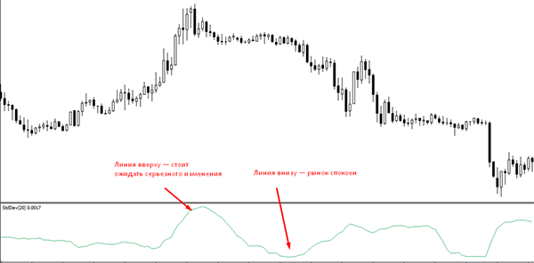Применяется простая скользящая средняя формула во множестве случаев. Основные принципы использования этого индикатора описаны выше, но каждый трейдер может с его помощью изобрести собственную прибыльную стратегию.
Индикатор Envelopes
Индикатор конверт относится к трендовым индикаторам рынка бинарных опционов, который зачастую используется инвесторами в своей торговле. В его основе лежат две скользящих средних цены с равным удалением. В итоге цена оказывается зажата в этом своеобразном «конверте», двигаясь от одной границы к другой.
Индикатор envelopes: описание
Говоря о том, как индикатор выглядит на графике цены, стоит отметить его схожесть с Полосами Боллинджера. Однако в индикаторе envelopes (по-русски «конверты») используется простая скользящая средняя с периодом 14. Уже от нее рисуются две параллельные линии, которые отходят на одинаковое расстояние в процентах. При желании настройки индикатора envelopes позволяют нанести и саму среднюю, которая будет находиться посередине конверта. Не стоит забывать, что отклонение рассчитывается пропорционально в процентах, что не всегда правильно, поскольку при этом не всегда учитывается волатильность торгуемого финансового актива. Поэтому многими трейдерами в настройки вносится значение среднего истинного диапазона цены (ATR), что позволяет более точно устанавливать границы конвертов и ограничить количество ложных сигналов индикатора.
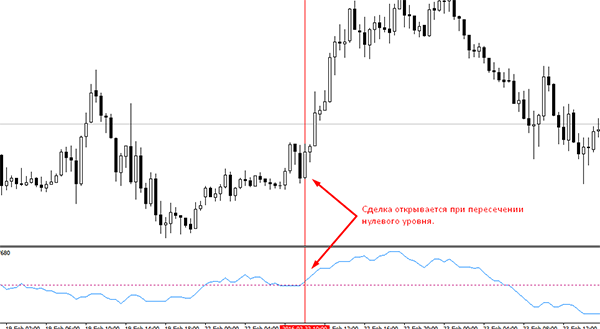Работа по индикатору «конверт Элдера» с бинарными опционами
Наиболее прибыльным вариантом работы с данным индикатором является покупка опциона у верхней или нижней границы диапазона, поскольку цена на рынке всегда будет стремиться к своему среднему значению. Если цена отталкивается от нижней границы конверта, то это значит, что можно покупать опцион Call. При этом более сильным сигналом будет являться ситуация, когда цена пробивает нижнюю границу, а затем вновь возвращается в рамки канала и устремляется вверх. Аналогично мы будем поступать, когда цена будет отталкиваться от верхней границы или ненадолго пробивать канал вверх, а затем возвращаться в пределы канала – это будет нам сигналом для покупки опциона Put. Также довольно популярной является работа от срединной линии до границы конверта. В зависимости от того какой тренд стоит на рынке, мы покупаем опцион Call при отскоке цены от простой средней вверх на восходящем тренде или покупаем опцион Put при отскоке цены от средней вниз на нисходящем движении.
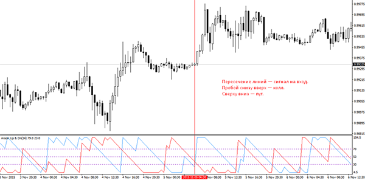Несмотря на то, что индикатор envelopes дает весьма точные сигналы трейдеру и прекрасно показывает направление движения на рынке, не стоит забывать, что в его основе лежит простая скользящая средняя, а значит, индикатор может запаздывать с сигналами, что особенно ощутимо при краткосрочной торговле.
Индикатор канал Дончиана
Индикатор Donchian Channel, или же канал Дончиана на графике располагается в виде полос и его относят к трендовым инструментам. Он строится по максимумам и минимумам цены за определенный временной период. В основном инвесторы применяют его как генератор торговых сигналов при пробое сильных уровей поддержки или сопротивления.
Описание индикатора канал Дончиана (Donchian Channel)
Чтобы понять, каким образом работать с данным индикатором и как он генерирует сигналы, нужно понимать, как он строится. Верхняя и нижняя граница канала строится на графике цены по историческому максимуму и минимуму за определенный период, который инвестор может настроить самостоятельно. Благодаря этому индикатор не только показывает направление движение цены, но и волатильность на рынке. В итоге на графике мы видим конверт, визуально напоминающий другие канальные индикаторы.
В настройках зачастую установлен по умолчанию период 20, тогда как в случае торговли на небольших сроках лучше всего использовать для работы меньшие периоды. Точно так же, в зависимости от торгуемого актива, настойки индикатора могут меняться. Каждый трейдер сможет их подобрать самостоятельно, поработав с торговым терминалом на демо-счете.
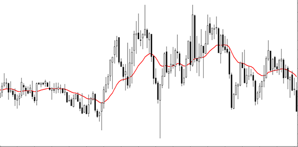Канал Дончиана: стратегия работы
После настройки индикатора верхняя линия канала будет располагаться на максимуме стоимости актива за выбранное количество периодов. Точно так же нижняя граница будет указывать на минимальную цену в выбранном периоде. Следовательно, покупать опцион Call мы станем тогда, когда график цены пробьет канал снизу вверх, а опцион Put в противоположной ситуации, когда цена пробьет нижнюю границу канала. Также использовать индикатор канал Дончиана можно при поиске точек разворота. Если цена не может преодолеть сопротивление или поддержку верхней или нижней границы канала, то есть смысл покупать опционы наоборот. При отскоке от верхней границы – Put, а при отскоке от нижней – Call. При этом нужно обязательно помнить, что сам по себе индикатор не может служить индивидуальным инструментом для построения стратегии, его стоит использовать совместно с другими инструментами, чтобы максимально ограничить возможность появления ложных сигналов. Он показывает максимальную эффективность при работе с активами, способными на резкие движения, в условиях хорошо выраженного тренда.
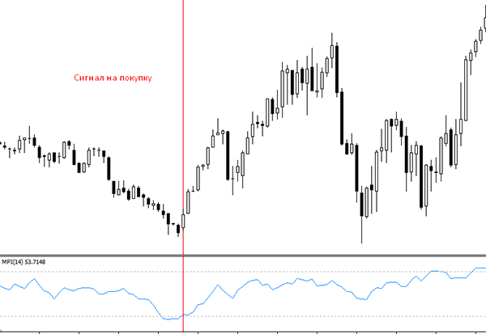Индикатор Аллигатор
Одним из самых известных и наиболее часто используемых индикаторов на рынке является Аллигатор Билла Уильямса. Его популярность обусловлена тем, что данный инструмент используется не только для показа, в какую сторону будет направлен тренд, но и позволяет уловить момент его формирования, чтобы вовремя войти в рынок. Индикатор Аллигатор состоит из трех скользящих средних, и каждая из них обладает своими коэффициентами смещения и периодами.
Описание индикатора Аллигатор
Инструмент, разработанный Биллом Уильямсом, на графике цены выглядит, как три кривых, при этом каждая имеет свое собственное название:
Челюсть Аллигатора;
Зубы Аллигатора;
Губа Аллигатора.
Линия Челюсть Аллигатора имеет период 13 и смещение 8. Ее цель – сигнализировать о долгосрочных тенденциях на рынке. Автор инструмента называет ее Балансовой кривой. Когда график цены находится выше ее – это говорит про восходящий тренд, если ниже – это означает, что мы наблюдаем за нисходящим движением. В стандартных настройках эта линия имеет синий цвет.
Вторая скользящая средняя с периодом расчета 8 и коэффициентом смещения 5 помогает определиться со среднесрочными перспективами торговли. Имея название Зубы Аллигатора, линия отображается на графике красным цветом.
Последняя линия, Губа Аллигатора – самая короткая, с расчетным периодом 5 и смещением 3, в стандартных настройках обычно зеленого цвета. Она быстрее всех реагирует на изменение цены, поэтому помогает трейдерам, торгующим на кратких сроках.
Согласно автору индикатора, силу предстоящего движения можно определить по тому, насколько долго рынок находился в боковом движении. В этот момент линии индикатора переплетены – аллигатор спит. Когда линии начнут расширять расстояние между собой – это сигнал нам приготовится ко входу в рынок и ожидание торгового сигнала.
Как работать с индикатором Аллигатор
Сигналом к покупке опциона Call будет движение всех трех средних вверх, что говорит о начале восходящего тренда. При этом, в зависимости от временного отрезка, на котором мы наблюдаем такое движение, мы будем выбирать соответствующий срок экспирации опциона. То есть если это происходит на краткосрочном отрезке, то и срок экспирации следует выбирать небольшой. Так же следует поступать и при развороте всех средних вниз, что дает возможность, предположив будущий нисходящий тренд, заключить сделку на опцион Put.
Хотя сам по себе индикатор Аллигатор Билла Уильямса – это вполне самодостаточный инструмент, у него тоже есть пара недостатков. Поскольку инструмент основан на скользящих средних, он может давать ложные сигналы, а также опаздывать с ними. Поэтому мы рекомендуем использовать его в комплексе с другими трендовыми индикаторами, что даст возможность фильтровать сигналы для входа в рынок.
Индикатор Ишимоку
Одним из самых сложных, но, тем не менее, высокоточным индикатором, является многофункциональный инструмент – Ишимоку Кинко Хайо. Как понятно из названия, он был разработан в Японии и достаточно быстро стал популярным на финансовых рынках и в том числе, на рынке бинарных опционов.
Описание индикатора Ишимоку
Торговля по индикатору Ишимоку проходит по нескольким линиям, которые нанесены на график цены. Каждая из таких линий носит собственное имя:
Тенкан Сен;
Кинджун Сен;
Чикоу Спан;
Сенкоу Спан А;
Сенкоу Спан Б.
Тенкан Сен имеет роль маркера быстрого тренда, то есть будет нам показывать краткосрочное движение тренда, она имеет настройку в 9 периодов – полторы недели на дневном графике. Последние две линии будут образовывать область, которую называют облаком. Кинджун Сен играет роль указателя долгосрочного движение тренда и его направления. Она рассчитывается на 26 периодах, то есть количестве рабочих дней в месяце. Чикоу Спан отстает от графика на те же 26 временных интервалов.
Две последних линии образуют, так называемое облако, наиболее известный элемент индикатора. Сенкоу Спан А – это верхняя линия, которая отображает среднее движение между Кинджун и Тенкан Сен. Зачастую она может выступать как сильный уровень сопротивления или поддержки. Сенкой Спан Б – нижняя линия облака, которую рассчитывают как разницу между максимумом и минимумом цены в третьем периоде времени.
Как использовать индикатор Ишимоку для торговли бинарными опционами
Сам по себе инструмент предоставляет трейдеру огромное количество возможностей для анализа, а так же дает множество сигналов. Разберем некоторые из них. Когда линия Тенкан снизу вверх пересекает Кинджун, это сигнал к покупке опциона Call. Если ситуация обратная - это сигнал к опциону Put. Название этих паттернов – Золотой и Мертвый крест соответственно. Если линии индикатора пересекают график цены вниз – время покупать опционы Put, если вверх – опционы Call. Также будет давать возможность входа в рынок пересечение линий Сенкой A и B. Если первая будет пересекать сверху вниз – мы будем покупать опцион Call, при пересечении снизу вверх – покупаем опцион Put. Работа по облаку Ишимоку уже была описана нами в соответсвубюббыла описана нами в соответствующей стратегии, так что тут мы детально на ней останавливаться не будем.
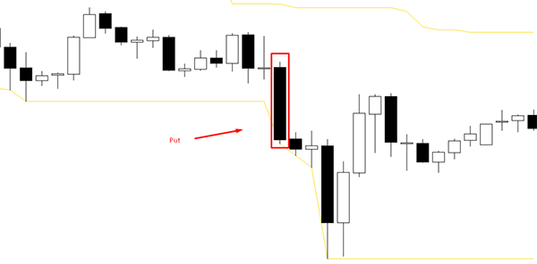Индикатор Ишимоку – инструмент не самый простой, зато на его основе можно составить весьма прибыльную стратегию, которая будет приносить стабильный доход. При этом Вам будет достаточно использовать лишь его. Но вот во время явно выраженного бокового движения его лучше не использовать, поскольку в таком состоянии рынка он способен генерировать большое количество ложных сигналов.
Индикатор денежный поток чайкина
Для того, чтобы успешно работать на любом из рынков, в том числе и бинарных опционов, необходимо четко на нем ориентироваться и понимать в какую сторону сейчас движется цена. Для этого существует немало технических индикаторов, призванных помочь трейдеру, один из которых – это денежный поток Чайкина.
Описание индикатора
Chaikin Money Flow (Денежный поток Чайкина) призван помочь быстро определить силу трендового движения, существующего на данный момент на рынке. И хоть новичку на рынке бинарных опционов может показаться, что разобраться с принципами его работы сложно, овладев им можно значительно увеличить свои шансы на успех. Основной принцип работы инструмента – его связь с линией распределения, которая дает понять силу трендового движения, базирующуюся на точках закрытия. Например, если текущий уровень закрытия находится вблизи недавних максимумов – это говорит про силу восходящего движения, и, наоборот, когда цена приближается к минимальным экстремумам, это свидетельствует про медвежий тренд.
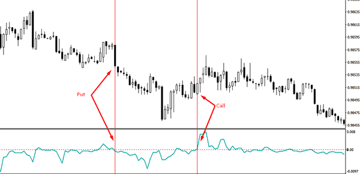Для расчета показателей индикатора денежного потока Чайкина рассчитывается сумма линий накопления за определенный период торгов на рынке, которую делят на весь объем торгов. Считается, что оптимальным периодом для работы будет период, равный 21, хотя трейдер может самостоятельно изменить этот параметр в настройках индикатора. Помимо этого инвестор может сместить кривую денежного потока Чайкина по времени, после чего вычисления показателей произойдет по-новому.
Работа с Chaikin Money Flow
Если внимательно посмотреть на индикатор, то можно заметить, что кривая постоянно находится около нулевого значения. Это значит, что самым простым способом получения сигналов от этого технического элемента анализа будет покупка опционов Call при нахождении сигнальной линии выше нулевой отметки и Put при перемещении ее ниже линии нуля. При этом существуют еще и дополнительные аспекты работы с индикатором, которые необходимо учитывать. К примеру, важно вести наблюдение за тем, сколько времени проводит индикатор в положительной и отрицательной области. Чем дольше кривая инструмента находится там, увеличивая или уменьшая значение собственного показателя, тем сильнее будет сигнал трейдеру на покупку соответствующего опциона.
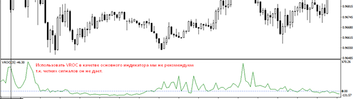Сам по себе индикатор «денежный поток Чайкина» генерирует достаточно простые и надежные сигналы для трейдера. А комбинируя его с другими индикаторами, можно заложить прекрасную основу для будущей собственной торговой стратегии.